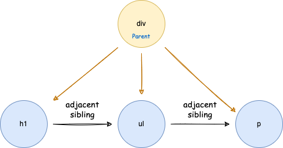
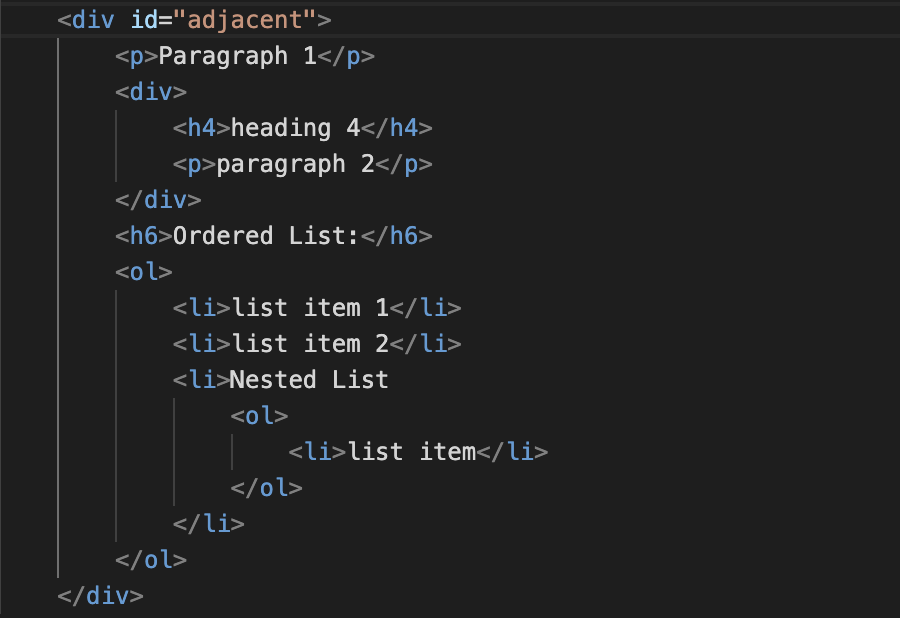

3. Adjacent Sibling Selector
"Adjacent" means "immediately following". The adjacent sibling selector is used to select an element that is directly after another specific element. Sibling elements must have the same parent element.
Example
Code

Output
Paragraph 1
heading 4
paragraph 2
Ordered List:
- list item 1
- list item 2
- Nested List
- list item